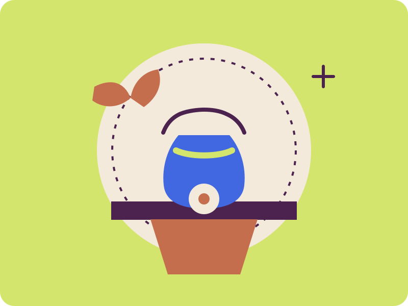
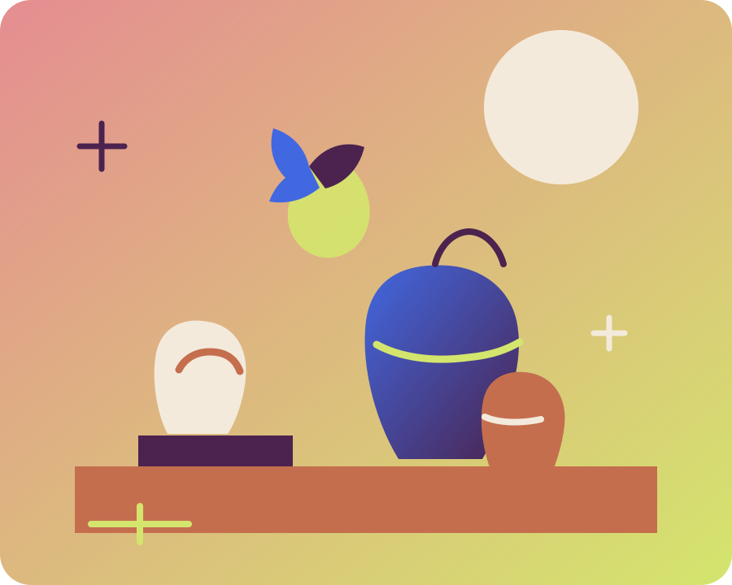

First spin
Find your centre. Learn the basics of wheel throwing and shape a small vessel. A hands-on taster for first timers.
K450 / person ↗Enquire about First spin COMMON FORMCLAY CLUB · LUSAKA
COMMON FORMCLAY CLUB · LUSAKA01 / THE CLASS MENU
Pick a way in. Every workshop includes clay, tools, a guide and the good kind of mess. Finished pieces are glazed and fired where noted.
02 / FIND YOUR FLOW

Find your centre. Learn the basics of wheel throwing and shape a small vessel. A hands-on taster for first timers.
K450 / person ↗Enquire about First spin
Pinch, coil and slab techniques. Make a small planter, cup or sculptural object without a wheel.
K350 / person ↗Enquire about Shape & story
A four-session beginner course covering centring, opening, pulling, trimming and glazing.
K1,600 / course ↗Enquire about the courseExplore surface, texture and glaze combinations on prepared ceramic forms. No previous experience required.
K300 / person ↗Enquire about Colour playSmall private sessions for birthdays, friends, team days and creative gatherings. We tailor the activity to your group.
From K2,800 / group ↗Plan a group sessionAn adult-and-child creative session using simple hand-building. The grown-up stays and makes alongside the young maker.
K500 / pair ↗Enquire about Little makersShowing all six fictional workshop formats. Prices and dates are sample details.
MAKE A DATE WITH CLAY
We'll help you find the right session.